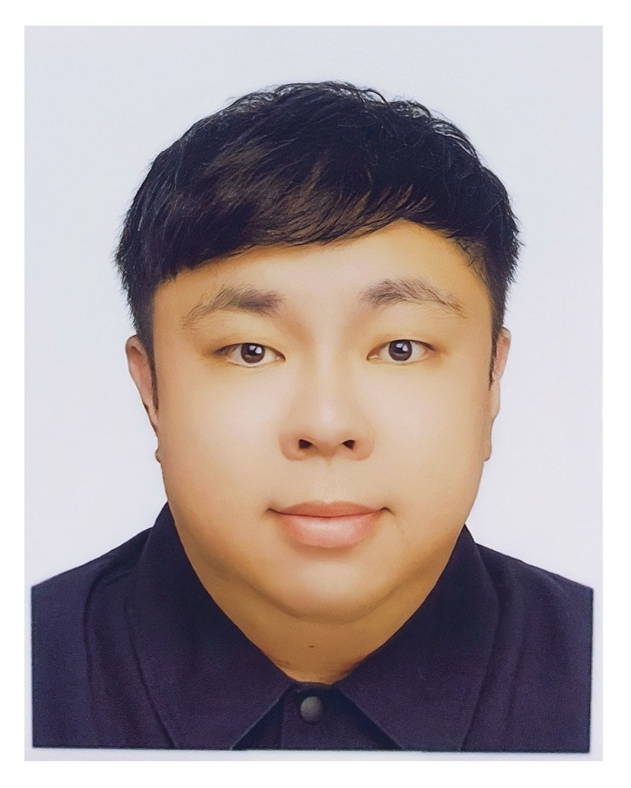

🚀 目前動態
現於職訓局進修 【Python人工智慧與數據分析班】，預計 2026/04/23 結業。
● 資料工程：SQL Server ETL、SSAS/SSRS、Azure 雲端架構
● 數據分析：Power BI 視覺化、DAX 建模、商業指標分析
● 程式開發：Python 爬蟲、NLP 情感分析、Streamlit 應用

現於職訓局進修 【Python人工智慧與數據分析班】，預計 2026/04/23 結業。
● 資料工程：SQL Server ETL、SSAS/SSRS、Azure 雲端架構
● 數據分析：Power BI 視覺化、DAX 建模、商業指標分析
● 程式開發：Python 爬蟲、NLP 情感分析、Streamlit 應用